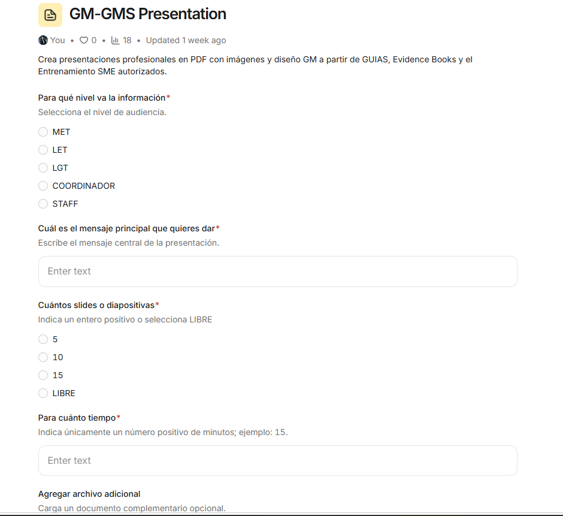
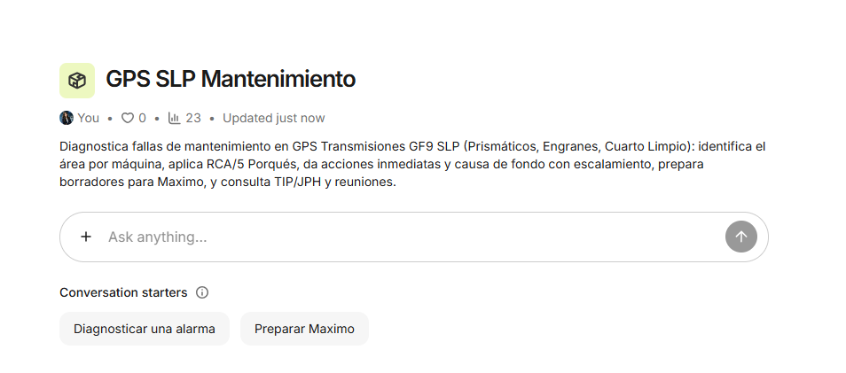

Proyecto 1 · Juntas ETAD
Aplicación para digitalizar el registro de juntas semanales, consulta de minutas y seguimiento de asistencia.
Entrar al proyecto
TerminadoProyecto 2 · GM-GMS Presentation
Crea presentaciones profesionales en PDF con imágenes y diseño GM a partir de GUIAS, Evidence Books y el Entrenamiento SME autorizados.
Entrar al proyecto
PruebaProyecto 3 · GPS SLP Mantenimiento
Diagnostica fallas de mantenimiento en GPS Transmisiones GF9 SLP (Prismáticos, Engranes, Cuarto Limpio): identifica el área por máquina, aplica RCA/5 Porqués, da acciones inmediatas y causa de fondo con escalamiento, prepara borradores para Maximo, y consulta TIP/JPH y reuniones.
Entrar al proyectoProyecto 4 · HPU DAY
Calcula HPU por planta, GPS y taller.
Entrar al proyectoSeguimiento
Cronograma y avance de proyectos
| Proyecto | Encargado por | Fecha de término | Estado | Avance |
|---|---|---|---|---|
| Junio 2026 | ||||
| Proyecto 1 · Juntas ETADRegistro digital de juntas semanales | Jesús Alberto Hernández González | Junio 2026 · finalizado | Finalizado | 100% |
| Agosto 2026 | ||||
| Proyecto 2 · GM-GMS PresentationAgente de presentaciones profesionales en PDF | David Arisai Guadarrama Beltrán | Agosto 2026 · finalizado | Terminado | 100% |
| Septiembre 2026 | ||||
| Proyecto 3 · GPS SLP MantenimientoAgente de diagnóstico de fallas de mantenimiento | Erick Moreno | 22 de septiembre de 2026 · estimada | Prueba | 80% |
| Octubre 2026 | ||||
| Proyecto 4 · HPU DAYAgente de cálculo de HPU por planta, GPS y taller | Leticia Ávila Wall | 5 de octubre de 2026 · estimada | Proceso | 40% |
El cronograma está ordenado por mes de término: los proyectos de junio y agosto de 2026 están al 100%, mientras que los de septiembre y octubre de 2026 muestran su avance actual y su fecha estimada de cierre.